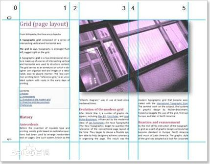

CSS即层叠样式表（Cascading StyleSheet）.在网页制作时采用层叠样式表技术，可以有效地对页面的布局、 字体、颜色、背景和其它效果实现更加精确的控制。 只要对相应的代码做一些简单的修改，就可以改变同一 页面的不同部分，或者页数不同的网页的外观和格式。CSS3是CSS技术的升级版本，CSS3语言开发是朝着模块化发展的。 以前的规范作为一个模块实在是太庞大而且比较复杂，所以，把它分解为一些小的模块，更多新的模块也被加入进来。 这些模块包括： 盒子模型、列表模块、超链接方式 、语言模块 、背景和边框 、文字特效 、多栏布局等。
1、CSS3圆角表格，对应属性：border-radius。 2、以往对网页上的文字加特效只能用filter这个属性，这次CSS3中专门制订了一个加文字特效的属性， 而且不止加阴影这种效果。对应属性：font-effect。 3、丰富了对链接下划线的样式，以往的下划线都是直线，这次可不一样了，有波浪线、点线、虚线等等， 更可对下划线的颜色和位置进行任意改变。（还有对应顶线和中横线的样式，效果与下划线类似）对应属性：text-underline-style。 4、在文字下点几个点或打个圈以示重点，CSS3也开始加入了这项功能，这应该在某些特定网页上很有用。对应属性： font-emphasize-style和font-emphasize-position。
变形(transform)、转换(transition)和动画(animation) transform: rotate | scale | skew | translate |matrix; 旋转rotate、扭曲skew、缩放scale和移动translate以及矩阵变形matrix。 transition主要包含四个属性值：执行变换的属性：transition-property,变换延续的时间：transition-duration,在延续时间段， 变换的速率变化transition-timing-function,变换延迟时间transition-delay。下面分别来看这四个属性值 在开始介绍Animation之前 我们有必要先来了解一个特殊的东西，那就是"Keyframes",我们把他叫做“关键帧”，玩过flash的朋友可能对这个东西并不会陌生。下面 我们就一起来看看这个“Keyframes”是什么东西。
